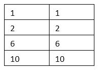
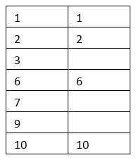
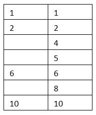
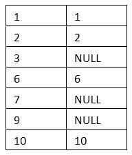

テーブルを結合して取得（INNER JOIN,OUTER JOIN）
エクセルVBAでデータベースを扱うためのSQL入門です。
前回データベースの正規化を説明し、マスターデータとトランザクションデータとしてそれぞれのテーブルを作成しました。
分割されたデータは結合しなければ必要な情報がそろいません。
複数テーブルの情報を必要に応じて結合して取得できるようになると、よりデータベースおよびSQLの利便性が感じられるはずです。
これらは、元表に対して情報を追加するものになりますが、SQLではより高度に複数の表を合体させる事が出来ます。
そして、その合体させる方法がSQLには複数用意されています。
テーブルの結合方法
どちらか一方にでも結合条件を満たす行が無ければ、そのデータは対象外になります。

左のテーブルの全ての行に対して、右のテーブルは結合条件を満たす行だけになります。

右のテーブルの全ての行に対して、左のテーブルは結合条件を満たす行だけになります。

※SQLiteではサポートされていません。
2つのテーブルの直積（デカルト積）になります。
取得されるデータ量が極めて多くなるので、使用範囲はかなり限定されます。
NATURAL INNER JOIN
NATURAL LEFT JOIN
結合条件は省略できますが、
実際には、テーブル定義時にカラム名をかなり入念に検討しなければ使えないでしょう。
何よりSQLだけでは判断できないので、使用する機会はほとんどないと思います。
列名修飾とエイリアス
カラム名が重複してしまいどのテーブルのカラムかが一意に決まらない場合が出てきます。
そこで、どのテーブルのカラムかを指定する修飾子が必要になってきます。
テーブル名.カラム名
このように、.（ドット、ピリオド）を使ってテーブルを指定します。
しかし、SQLを見た時、どのテーブルの列か判断できなくなってしまうのでテーブル修飾は必ず行うようにします。
任意の式 [AS] 別名
任意の式 [AS] 別名
※ASを記述できないデータベースもあります。
※エイリアスの大文字小文字は統一してください、大文字小文字が違うとエラーになる場合があります。
SELECT T.code AS コード FROM t_sales AS T
内部結合：INNER JOIN
FROM テーブル名1
INNER JOIN テーブル名2
ON 結合条件
条件が一致したデータのみ抽出します。
結合条件には、ANDやORを使った論理式を記述できます。
SELECT T.code,M.name
FROM t_sales T
INNER JOIN m_customer M
ON T.code = M.code
左外部結合：LEFT OUTER JOIN
FROM テーブル名1
LEFT [OUTER] JOIN テーブル名2
ON 結合条件
テーブル名1とテーブル名2を結合条件で結合し、
結合条件に合致するテーブル名2の存在有無に関わらず、
テーブル名1の全行が対象になります。
SELECT T.code,M.name
FROM t_sales T
LEFT JOIN m_customer M
ON T.code = M.code
テーブル名2の合致するデータがない行では、テーブル名2のフィールドはNULLになります。
右外部結合：RIGHT OUTER JOIN
FROM テーブル名1
RIGHT [OUTER] JOIN テーブル名2
ON 結合条件
テーブル名1とテーブル名2を結合条件で結合し、
結合条件に合致するテーブル名1の存在有無に関わらず、
テーブル名2の全行が対象になります。
SELECT T.code,IFNULL(M.name,'マスタなし')
FROM t_sales T
RIGHT JOIN m_customer M
ON T.code = M.code
テーブル名1の合致するデータがない行では、テーブル名1のフィールドはNULLになります。
したがって、どちらか一方のみの使用に統一すべきです。
RIGHT JOINは使わずに、LEFT JOINで統一するのが一般的になります。
SQL入門では、LEFT JOINに統一して使用していきます。
外部結合（OUTER JOIN）で結合条件に一致する行が無い場合
結合したテーブルに結合条件の行が存在しない場合、フィールドはNULLになります。

SELECT T.code,M.name
FROM t_sales T
LEFT JOIN m_customer M
ON T.code = M.code
結合先のテーブルが存在しているかどうかの判断には、
NULLが入らないカラムを使ってNULL判定（IS NULL または IFNULL）することで行えます。
複数のJOINを組み合わせた使用例
Sub SelectJoin()
Dim clsDB As New clsSQLite
clsDB.DataBase = "C:\SQLite3\sample.db"
Dim ws As Worksheet
Set ws = ActiveSheet
Dim sSql As String
sSql = ""
sSql = sSql & "SELECT" & vbCrLf
sSql = sSql & " T.code,M1.name,M1.address,T.sales_date" & vbCrLf
sSql = sSql & ",T.item_code,IFNULL(M2.item_name,'マスタなし')" & vbCrLf
sSql = sSql & ",T.item_price,T.item_count" & vbCrLf
sSql = sSql & ",T.item_price * T.item_count AS item_amount" & vbCrLf
sSql = sSql & ",T.comment" & vbCrLf
sSql = sSql & " FROM t_sales T" & vbCrLf
sSql = sSql & " INNER JOIN m_customer M1" & vbCrLf
sSql = sSql & " ON T.code = M1.code" & vbCrLf
sSql = sSql & " LEFT JOIN m_item M2" & vbCrLf
sSql = sSql & " ON T.item_code = M2.item_code" & vbCrLf
sSql = sSql & " WHERE T.code = '001'"
If Not clsDB.SheetFromRecordset(sSql, ws.Range("A1"), Clear, True) Then
MsgBox clsDB.ErrMsg
Exit Sub
End If
Set clsDB = Nothing
End Sub
外部結合しているm_itemのitem_nameはデータが無い時には'マスタなし'となります。
ここでは、SQLサンプルとして、あえてINNER JOINを使用しています。
両方のテーブルに存在するカラム（ここではcode）は、どちらのテーブルを使用しても同じです。
したがって上記SQLのSELECTでは、T.codeの代わりにM1.codeとしても結果は同じになります。
INNERでもLEFTでも結果は同じになってしまいます。
それぞれのテーブルにデータを追加して、JOINの違いを確認しておきましょう。
JOINを使わない内部結合
SELECT T.code,M.name
FROM t_sales T
INNER JOIN m_customer M
ON T.code = M.code
SELECT T.code,M.name
FROM t_sales T
,m_customer M
WHERE T.code = M.code（ただしOracleには(+)で外部結合する書き方があります。）
ただし、既に書かれているSQLで使われている場合もあるので、読めるようにはしておきましょう。
テーブルを結合して取得の最後に
上記でも説明していますが、実際に使えるようになっておくべき必須の結合方法は、
INNER JOIN
LEFT JOIN
この2つだけになりますので、これはしっかり習得しておきましょう。
次回はこの縦に連結する、複数のSELECTした結果を統合するUNIONについて解説します。
同じテーマ「SQL入門」の記事
データベースにおけるNULLの扱い方
データベースの正規化とマスタの作成
全テーブル定義とテーブル自動作成VBA
テーブルを結合して取得（INNER JOIN,OUTER JOIN）
複数のSELECT結果を統合（UNION,UNION ALL）
データの更新（UPDATE）
データの削除（DELETE）
他のテーブルのデータで追加/更新/削除
インデックスを作成して高速化（CREATE INDEX）
トランザクション処理
VBAクラスの全コード：トランザクション処理
新着記事NEW ・・・新着記事一覧を見る
VBA100本ノック 100本目：WEBから100本ノックのリストを取得｜VBA練習問題（3月3日）
VBA100本ノック 99本目：自動席替え（行列と前後左右が全て違うように）｜VBA練習問題（3月2日）
VBA100本ノック 98本目：席替えルールが守られているか確認｜VBA練習問題（3月1日）
VBA100本ノック 97本目：Accessデータを取得（グループ集計）｜VBA練習問題（2月27日）
VBA100本ノック 96本目：Accessデータを取得（マスタ結合&抽出）｜VBA練習問題（2月26日）
VBA100本ノック 95本目：図形のテキストを検索するフォーム作成｜VBA練習問題（2月24日）
VBA100本ノック 94本目：表範囲からHTMLのtableタグを作成｜VBA練習問題（2月23日）
VBA100本ノック 93本目：複数ブックを連結して再分割｜VBA練習問題（2月22日）
VBA100本ノック 92本目：セルの色を16進で返す関数｜VBA練習問題（2月20日）
VBA100本ノック 91本目：時間計算（残業時間の月間合計）｜VBA練習問題（2月19日）
アクセスランキング ・・・ ランキング一覧を見る
1.最終行の取得（End,Rows.Count）｜VBA入門
2.RangeとCellsの使い方｜VBA入門
3.変数宣言のDimとデータ型｜VBA入門
4.マクロって何？VBAって何？｜VBA入門
5.Range以外の指定方法（Cells,Rows,Columns）｜VBA入門
6.セルのコピー&値の貼り付け（PasteSpecial）｜VBA入門
7.繰り返し処理（For Next)｜VBA入門
8.セルに文字を入れるとは（Range,Value）｜VBA入門
9.マクロはどこに書くの（VBEの起動）｜VBA入門
10.とにかく書いてみよう（Sub,End Sub）｜VBA入門
このサイトがお役に立ちましたら「シェア」「Bookmark」をお願いいたします。
記述には細心の注意をしたつもりですが、
間違いやご指摘がありましたら、「お問い合わせ」からお知らせいただけると幸いです。
掲載のVBAコードは動作を保証するものではなく、あくまでVBA学習のサンプルとして掲載しています。
掲載のVBAコードは自己責任でご使用ください。万一データ破損等の損害が発生しても責任は負いません。